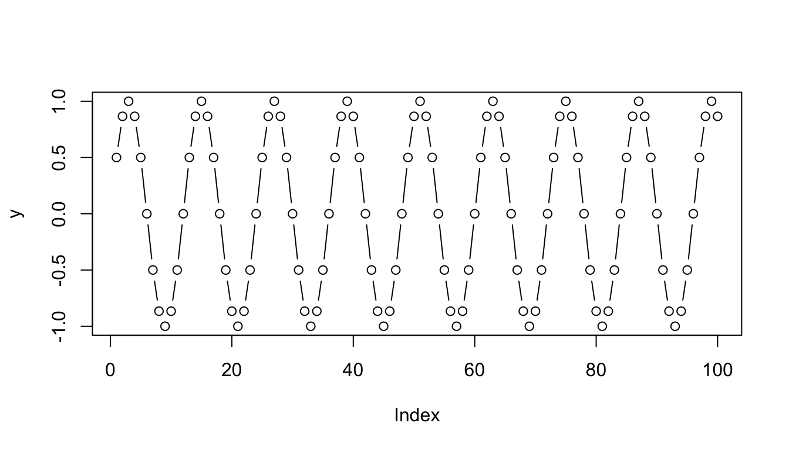
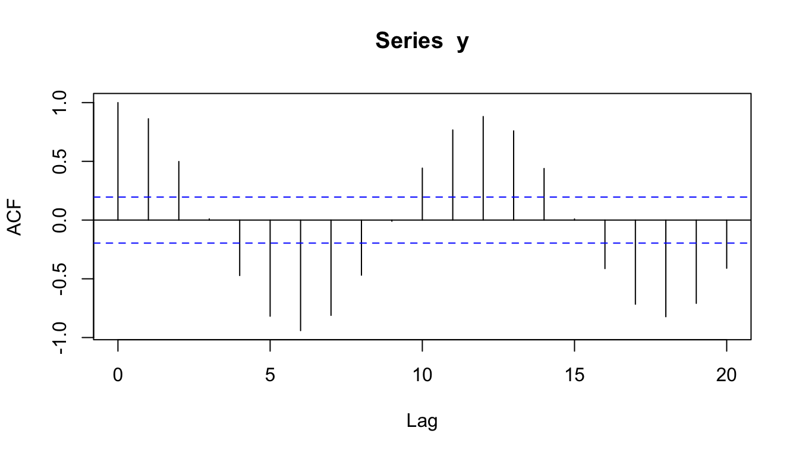
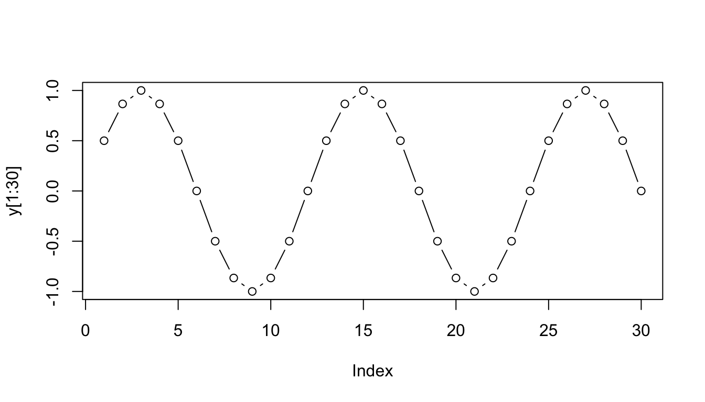
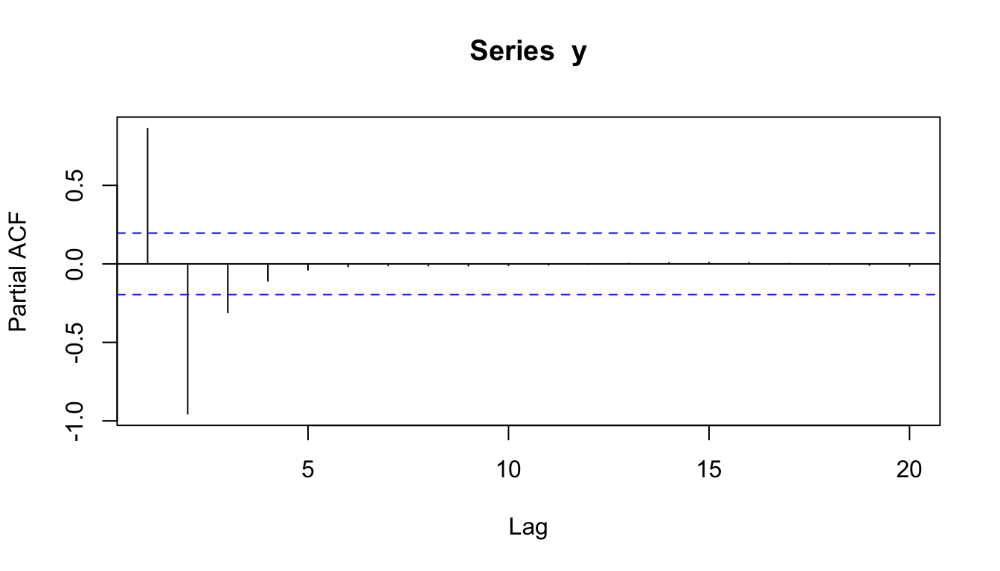

require(zoo)require(data.table)library(dplyr)library(lubridate)unemp <-fread(paste0(data_file_path,"bezrobocie_USA.csv")) %>% data.table::melt( id.vars='Year',variable.name ="months",value.name='UNRATE') %>%left_join(data.frame(month_nr=c(1:12),months=c("Jan","Feb","Mar","Apr","May","Jun","Jul","Aug","Sep","Oct","Nov","Dec"))) %>%mutate(DATE=as_date('0000-01-01',format ='%Y-%m-%d')+years(as.numeric(Year)) +months(month_nr-1)) head(unemp)## Year months UNRATE month_nr DATE## 1: 1948 Jan 3.4 1 1948-01-01## 2: 1949 Jan 4.3 1 1949-01-01## 3: 1950 Jan 6.5 1 1950-01-01## 4: 1951 Jan 3.7 1 1951-01-01## 5: 1952 Jan 3.2 1 1952-01-01## 6: 1953 Jan 2.9 1 1953-01-01unemp = unemp[, DATE :=as.Date(DATE)][!is.na(UNRATE),.(DATE, UNRATE)]setkey(unemp, DATE)## Creating dataset with random missing valuesrand.unemp.idx <-sample(1:nrow(unemp), .1*nrow(unemp))rand.unemp <- unemp[-rand.unemp.idx]## Creating dataset with systematical missing values, appearing in month with highest unemployment ratehigh.unemp.idx <-which(unemp$UNRATE >8)high.unemp.idx <-sample(high.unemp.idx, .5*length(high.unemp.idx))bias.unemp <- unemp[-high.unemp.idx]## to identyfy missing data I wil use rolling joins tool from data.table package all.dates <-seq(from = unemp$DATE[1], to =tail(unemp$DATE, 1), by ="months")rand.unemp = rand.unemp[J(all.dates), roll=FALSE]bias.unemp = bias.unemp[J(all.dates), roll=FALSE]## forward fillingrand.unemp[, impute.ff :=na.locf(UNRATE, na.rm =FALSE)]bias.unemp[, impute.ff :=na.locf(UNRATE, na.rm =FALSE)]## Mean moving average with use of lookahead phenomenrand.unemp[, impute.rm.lookahead :=rollapply(data=c(UNRATE,NA, NA), width=3,FUN=function(x) {if (!is.na(x[1])) x[1] elsemean(x, na.rm =TRUE) })] bias.unemp[, impute.rm.lookahead :=rollapply(c(UNRATE, NA,NA), 3,FUN=function(x) {if (!is.na(x[1])) x[1] elsemean(x, na.rm =TRUE) })] ## Mean moving average withou use of lookahead phenomenrand.unemp[, impute.rm.nolookahead :=rollapply(c(NA, NA, UNRATE), 3,function(x) {if (!is.na(x[3])) x[3] elsemean(x, na.rm =TRUE) })] bias.unemp[, impute.rm.nolookahead :=rollapply(c(NA, NA, UNRATE), 3,function(x) {if (!is.na(x[3])) x[3] elsemean(x, na.rm =TRUE) })] ## linear interpolation fullfilling NA with linear interpolation between two data pointsrand.unemp[, impute.li :=na.approx(UNRATE, maxgap=Inf)]bias.unemp[, impute.li :=na.approx(UNRATE)]zz <-c(NA, 9, 3, NA, 3, 2,NA,5,6,10,NA,NA,NA,0)na.approx(zz, na.rm =FALSE, maxgap=2)## [1] NA 9.0 3.0 3.0 3.0 2.0 3.5 5.0 6.0 10.0 NA NA NA 0.0na.approx(zz, na.rm =FALSE, maxgap=Inf)## [1] NA 9.0 3.0 3.0 3.0 2.0 3.5 5.0 6.0 10.0 7.5 5.0 2.5 0.0na.approx(zz,xout=11, na.rm =FALSE, maxgap=Inf)## [1] 7.5## Using root mean square error to compare methodsprint(rand.unemp[ , lapply(.SD, function(x) mean((x - unemp$UNRATE)^2, na.rm =TRUE)),.SDcols =c("impute.ff", "impute.rm.nolookahead", "impute.rm.lookahead", "impute.li")])## impute.ff impute.rm.nolookahead impute.rm.lookahead impute.li## 1: 0.006336303 0.007951505 0.1085368 0.0263179print(bias.unemp[ , lapply(.SD, function(x) mean((x - unemp$UNRATE)^2, na.rm =TRUE)),.SDcols =c("impute.ff", "impute.rm.nolookahead", "impute.rm.lookahead", "impute.li")])## impute.ff impute.rm.nolookahead impute.rm.lookahead impute.li## 1: 0.006982183 0.004494382 0.003303371 0.001120391
Metrics
autocorelation
Autocorelation is measuring the direction of change basing on one point. Since the point on sinusoid close to each other have similar value this autocorelation is high if measuring on distance of pi /6 (0.52). In case of distance of 1 pi value is just opposite so ACF is equal -1.
Show the code
require(data.table)## Rx <-1:100y <-sin(x * pi /6)plot(y, type ="b")

Show the code
acf(y)

Show the code
## Rcor(y, shift(y, 1), use ="pairwise.complete.obs")## [1] 0.870187cor(y, shift(y, 2), use ="pairwise.complete.obs") ## [1] 0.5111622
Visualisation
Allows for visualising multiple micro time series within dataset. It is called Gant chart,
Partial autocorelation shows which point have informational meaning and which simple derives from harmonical periods of time. For seasonal, wihtout noise process, PACF show which correlation for given delay, are the true ones, eliminating redunduntion.It helps to aproximate how much data do we need to poses to apply sufficient window for given time scale.
Show the code
## Ry <-sin(x * pi /6)plot(y[1:30], type ="b")

Show the code
pacf(y)

Simulation
Smoothing
Smoothing is commonelly used forecasting method. Smoothed time series can be used as zero hypothesis to for testing more sophisticated methods.
Show the code
import pandas as pdimport numpy as npimport datetimeunemp = r.unemp#unemp.index = unemp.DATEdf = unemp.copy()df = df[((df.DATE >=pd.to_datetime('2014-01-01')) & (df.DATE < pd.to_datetime('2019-01-01')))]## /Users/lrabalski1/miniforge3/envs/everyday_use/lib/python3.8/site-packages/pandas/core/ops/array_ops.py:73: FutureWarning: Comparison of Timestamp with datetime.date is deprecated in order to match the standard library behavior. In a future version these will be considered non-comparable.Use 'ts == pd.Timestamp(date)' or 'ts.date() == date' instead.## result = libops.scalar_compare(x.ravel(), y, op)df = df.rename(columns={"UNRATE": "data"})#df.reset_index(drop=True, inplace=True)train = df[['data']].iloc[:-12, :]test = df[['data']].iloc[-12:, :]# train.index = pd.to_datetime(train.index)# test.index = pd.to_datetime(test.index)## We can use the pandas.DataFrame.ewm() function to calculate the exponentially weighted moving average for a certain number of previous periods.
moving average
An improvement over simple average is the average of n last points. Obviously the thinking here is that only the recent values matter. Calculation of the moving average involves what is sometimes called a “sliding window” of size n:
Show the code
def average(series):returnfloat(sum(series))/len(series)# moving average using n last pointsdef moving_average(series, n):return average(series[-n:])moving_average(train.data,4)## 4.2
Weighted Moving Average
A weighted moving average is a moving average where within the sliding window values are given different weights, typically so that more recent points matter more.
Instead of selecting a window size, it requires a list of weights (which should add up to 1). For example if we picked [0.1, 0.2, 0.3, 0.4] as weights, we would be giving 10%, 20%, 30% and 40% to the last 4 points respectively. In Python:
Show the code
# weighted average, weights is a list of weightsdef weighted_average(series, weights): result =0.0 weights.reverse()for n inrange(len(weights)): result += series[-n-1] * weights[n]return resultweights = [0.1, 0.15, 0.25, 0.5]weighted_average(train.data.values, weights)## 4.16
exponentially weightening
The exponentially weighted function is calculated recursively:
where alpha is smoothing factor \(0 < \alpha \leq 1\) . The higher the α, the faster the method “forgets”.
There is an aspect of this method that programmers would appreciate that is of no concern to mathematicians: it’s simple and efficient to implement. Here is some Python. Unlike the previous examples, this function returns expected values for the whole series, not just one point.
Show the code
# given a series and alpha, return series of smoothed pointsdef exponential_smoothing(series, alpha): result = [series[0]] # first value is same as seriesfor n inrange(1, len(series)): result.append(alpha * series[n] + (1- alpha) * result[n-1])return resultres_exp_smooth8 = exponential_smoothing(train.data.values, alpha=0.8)res_exp_smooth5 = exponential_smoothing(train.data.values, alpha=0.5)res_exp_smooth2 = exponential_smoothing(train.data.values, alpha=0.2)
Conclusion
I showed some basic forecasting methods: moving average, weighted moving average and, finally, single exponential smoothing. One very important characteristic of all of the above methods is that remarkably, they can only forecast a single point. That’s correct, just one.
Double exponential smoothing
a.k.a Holt Method
In case of forecasting simple exponential weightening isn’t giving good results for data posessing longterm trend. For this purpose it is good to apply method aimed for data with trend (Holt) or with trend and seasonality (Holt-Winter).
Double exponential smoothing is nothing more than exponential smoothing applied to both level and trend.
Show the code
# given a series and alpha, return series of smoothed pointsdef double_exponential_smoothing(series, alpha, beta): result = [series[0]]for n inrange(1, len(series)+1):if n ==1: level, trend = series[0], series[1] - series[0]if n >=len(series): # we are forecasting value = result[-1]else: value = series[n] last_level= level level = alpha*value + (1-alpha)*(last_level+trend) trend = beta*(level-last_level) + (1-beta)*trend result.append(level+trend)return resultres_double_exp_smooth_alpha_9_beta9=double_exponential_smoothing(train.data.values, alpha=0.9, beta=0.9)
Triple Exponential Smoothing
a.k.a Holt-Winters Method
Initial Trend
For double exponential smoothing we simply used the first two points for the initial trend. With seasonal data we can do better than that, since we can observe many seasons and can extrapolate a better starting trend. The most common practice is to compute the average of trend averages across seasons.
Seasonal values we can interpret as average distance value from seasonal average. We can see that January {0} is on higher than average and December value {11} is lower than average. We can see that those month differ from each other exactly with the power of those values
def triple_exponential_smoothing(series, slen, alpha, beta, gamma, n_preds): result = [] seasonals = initial_seasonal_components(series, slen)for i inrange(len(series)+n_preds):if i ==0: # initial values smooth = series[0] trend = initial_trend(series, slen) result.append(series[0])continueif i >=len(series): # we are forecasting m = i -len(series) +1 result.append((smooth + m*trend) + seasonals[i%slen])else: val = series[i] last_smooth, smooth = smooth, alpha*(val-seasonals[i%slen]) + (1-alpha)*(smooth+trend) trend = beta * (smooth-last_smooth) + (1-beta)*trend seasonals[i%slen] = gamma*(val-smooth) + (1-gamma)*seasonals[i%slen] result.append(smooth+trend+seasonals[i%slen])return resultres_triple_exp_smooth = triple_exponential_smoothing(train.data.values, 12, 0.7, 0.02, 0.9, 10)
A Note on α, β and γ
You may be wondering from where values 0.7, 0.02 and 0.9 for α, β and γ It was done by way of trial and error: simply running the algorithm over and over again and selecting the values that give you the smallest SSE. This process is known as fitting.
There are more efficient methods at zooming in on best values. One good algorithm for this is Nelder-Mead, which is what tgres uses.
fitting data
Show the code
res = [res_exp_smooth8,res_exp_smooth5,res_exp_smooth2,res_double_exp_smooth_alpha_9_beta9,res_triple_exp_smooth]RMSE = []i=1for i inrange(len(res)): RMSE.append(np.sqrt(np.mean(np.square((train.data.values[0:48]- res[i][0:48])))))RMSE## [0.029444314294186542, 0.08240165108170797, 0.2272843505233408, 0.10916100840899878, 0.06909009711283208]
In case of fitting smoothed data to raw data, the best fit possess single exponenetial smoothing method with alpha =0.8 (putting higher weight on most recent data). This is exactly what could be expected. Is it then the best forecasting method for my data?
Obviously not.
Since all method take data point from time t for estimating smoothed value for time t such a models are not forecasting one’s. We are dealing here with lookahead problem. In order to predict we are using data which shouldn’t be available at the moment of making prediction.
Out of three methods prediction capabilities posses Holt method (using trend to linearly predict further data points) and Holt-Winter method (using trend and seasonality to predict further data points).
As name suggest autoregression is regression made upon past values. The simplest autoregression model is known as AR(1): \(y_t=b_0+b_1*y_{t-1}+e_t\)\(e_t\) is changeable within time error with stable variance and mean = 0.
Source Code
---title: "TS - missing data imputation & Smoothing"tags: ['missing data','time series','imputation', 'python', 'R']categories: ['Time Series', 'Smoothing']toc: TRUE---```{r markdown_parameters, include=FALSE}#markdown ----knitr::opts_chunk$set(#fig.width=12, fig.height=4,out.width ='100%' ) knitr::opts_chunk$set(include =TRUE, #prevents code and results from appearing in the finished file. R Markdown still runs the code in the chunk, and the results can be used by other chunks.warning =FALSE,message =FALSE,collapse=TRUE,error=TRUE )options(scipen=999)``````{r, include =FALSE}library(reticulate)Sys.setenv(RETICULATE_PYTHON ="/Users/lrabalski1/miniforge3/envs/everyday_use/bin/python")myenvs=conda_list()envname=myenvs$name[3]use_condaenv(envname, required =TRUE)``````{r, include =FALSE}data_file_path ='/Users/lrabalski1/Desktop/prv/data/'```## Dealing with missing data in Time Series```{r}require(zoo)require(data.table)library(dplyr)library(lubridate)unemp <-fread(paste0(data_file_path,"bezrobocie_USA.csv")) %>% data.table::melt( id.vars='Year',variable.name ="months",value.name='UNRATE') %>%left_join(data.frame(month_nr=c(1:12),months=c("Jan","Feb","Mar","Apr","May","Jun","Jul","Aug","Sep","Oct","Nov","Dec"))) %>%mutate(DATE=as_date('0000-01-01',format ='%Y-%m-%d')+years(as.numeric(Year)) +months(month_nr-1)) head(unemp)unemp = unemp[, DATE :=as.Date(DATE)][!is.na(UNRATE),.(DATE, UNRATE)]setkey(unemp, DATE)## Creating dataset with random missing valuesrand.unemp.idx <-sample(1:nrow(unemp), .1*nrow(unemp))rand.unemp <- unemp[-rand.unemp.idx]## Creating dataset with systematical missing values, appearing in month with highest unemployment ratehigh.unemp.idx <-which(unemp$UNRATE >8)high.unemp.idx <-sample(high.unemp.idx, .5*length(high.unemp.idx))bias.unemp <- unemp[-high.unemp.idx]## to identyfy missing data I wil use rolling joins tool from data.table package all.dates <-seq(from = unemp$DATE[1], to =tail(unemp$DATE, 1), by ="months")rand.unemp = rand.unemp[J(all.dates), roll=FALSE]bias.unemp = bias.unemp[J(all.dates), roll=FALSE]## forward fillingrand.unemp[, impute.ff :=na.locf(UNRATE, na.rm =FALSE)]bias.unemp[, impute.ff :=na.locf(UNRATE, na.rm =FALSE)]## Mean moving average with use of lookahead phenomenrand.unemp[, impute.rm.lookahead :=rollapply(data=c(UNRATE,NA, NA), width=3,FUN=function(x) {if (!is.na(x[1])) x[1] elsemean(x, na.rm =TRUE) })] bias.unemp[, impute.rm.lookahead :=rollapply(c(UNRATE, NA,NA), 3,FUN=function(x) {if (!is.na(x[1])) x[1] elsemean(x, na.rm =TRUE) })] ## Mean moving average withou use of lookahead phenomenrand.unemp[, impute.rm.nolookahead :=rollapply(c(NA, NA, UNRATE), 3,function(x) {if (!is.na(x[3])) x[3] elsemean(x, na.rm =TRUE) })] bias.unemp[, impute.rm.nolookahead :=rollapply(c(NA, NA, UNRATE), 3,function(x) {if (!is.na(x[3])) x[3] elsemean(x, na.rm =TRUE) })] ## linear interpolation fullfilling NA with linear interpolation between two data pointsrand.unemp[, impute.li :=na.approx(UNRATE, maxgap=Inf)]bias.unemp[, impute.li :=na.approx(UNRATE)]zz <-c(NA, 9, 3, NA, 3, 2,NA,5,6,10,NA,NA,NA,0)na.approx(zz, na.rm =FALSE, maxgap=2)na.approx(zz, na.rm =FALSE, maxgap=Inf)na.approx(zz,xout=11, na.rm =FALSE, maxgap=Inf)## Using root mean square error to compare methodsprint(rand.unemp[ , lapply(.SD, function(x) mean((x - unemp$UNRATE)^2, na.rm =TRUE)),.SDcols =c("impute.ff", "impute.rm.nolookahead", "impute.rm.lookahead", "impute.li")])print(bias.unemp[ , lapply(.SD, function(x) mean((x - unemp$UNRATE)^2, na.rm =TRUE)),.SDcols =c("impute.ff", "impute.rm.nolookahead", "impute.rm.lookahead", "impute.li")])```## Metrics### autocorelationAutocorelation is measuring the direction of change basing on one point. Since the point on sinusoid close to each other have similar value this autocorelation is high if measuring on distance of pi /6 (0.52). In case of distance of 1 pi value is just opposite so ACF is equal -1.```{r}require(data.table)## Rx <-1:100y <-sin(x * pi /6)plot(y, type ="b")acf(y)## Rcor(y, shift(y, 1), use ="pairwise.complete.obs")cor(y, shift(y, 2), use ="pairwise.complete.obs") ```## VisualisationAllows for visualising multiple micro time series within dataset. It is called Gant chart,```{r}require(timevis)require(data.table)donations <-fread(paste0(data_file_path,"donations.csv"))d <- donations[, .(min(timestamp), max(timestamp)), user]names(d) <-c("content", "start", "end")d <- d[start != end]timevis(d[sample(1:nrow(d), 20)])```### partial-autocorelationPartial autocorelation shows which point have informational meaning and which simple derives from harmonical periods of time. For seasonal, wihtout noise process, PACF show which correlation for given delay, are the true ones, eliminating redunduntion.It helps to aproximate how much data do we need to poses to apply sufficient window for given time scale.```{r}## Ry <-sin(x * pi /6)plot(y[1:30], type ="b") pacf(y)```## Simulation## SmoothingSmoothing is commonelly used forecasting method. Smoothed time series can be used as zero hypothesis to for testing more sophisticated methods.```{python}import pandas as pdimport numpy as npimport datetimeunemp = r.unemp#unemp.index = unemp.DATEdf = unemp.copy()df = df[((df.DATE >=pd.to_datetime('2014-01-01')) & (df.DATE < pd.to_datetime('2019-01-01')))]df = df.rename(columns={"UNRATE": "data"})#df.reset_index(drop=True, inplace=True)train = df[['data']].iloc[:-12, :]test = df[['data']].iloc[-12:, :]# train.index = pd.to_datetime(train.index)# test.index = pd.to_datetime(test.index)## We can use the pandas.DataFrame.ewm() function to calculate the exponentially weighted moving average for a certain number of previous periods.```### moving averageAn improvement over simple average is the average of n last points. Obviously the thinking here is that only the recent values matter. Calculation of the moving average involves what is sometimes called a "sliding window" of size n:```{python}def average(series):returnfloat(sum(series))/len(series)# moving average using n last pointsdef moving_average(series, n):return average(series[-n:])moving_average(train.data,4)```### Weighted Moving AverageA weighted moving average is a moving average where within the sliding window values are given different weights, typically so that more recent points matter more.Instead of selecting a window size, it requires a list of weights ([**which should add up to 1**]{.underline}). For example if we picked \[0.1, 0.2, 0.3, 0.4\] as weights, we would be giving 10%, 20%, 30% and 40% to the last 4 points respectively. In Python:```{python}# weighted average, weights is a list of weightsdef weighted_average(series, weights): result =0.0 weights.reverse()for n inrange(len(weights)): result += series[-n-1] * weights[n]return resultweights = [0.1, 0.15, 0.25, 0.5]weighted_average(train.data.values, weights)```### exponentially weighteningThe exponentially weighted function is calculated recursively:$$\begin{split}\begin{split}y_0 &= x_0\\y_t &= \alpha x_t + (1 - \alpha) y_{t-1} ,\end{split}\end{split}$$where alpha is smoothing factor $0 < \alpha \leq 1$ . The higher the α, the faster the method "forgets".There is an aspect of this method that programmers would appreciate that is of no concern to mathematicians: it's simple and efficient to implement. Here is some Python. Unlike the previous examples, this function returns expected values for the whole series, not just one point.```{python}# given a series and alpha, return series of smoothed pointsdef exponential_smoothing(series, alpha): result = [series[0]] # first value is same as seriesfor n inrange(1, len(series)): result.append(alpha * series[n] + (1- alpha) * result[n-1])return resultres_exp_smooth8 = exponential_smoothing(train.data.values, alpha=0.8)res_exp_smooth5 = exponential_smoothing(train.data.values, alpha=0.5)res_exp_smooth2 = exponential_smoothing(train.data.values, alpha=0.2)``````{python, eval=FALSE, include=FALSE}Using Pandas.When adjust=False, the exponentially weighted function is calculated recursivelyThe higher is alpha the lower impact of the most fresh dataunemp['Smooth.1'] = unemp.UNRATE.ewm(alpha=0.1,adjust=False,).mean()unemp['Smooth.2'] = unemp.UNRATE.ewm(alpha=0.2,adjust=False).mean()unemp['Smooth.3'] = unemp.UNRATE.ewm(alpha=0.3,adjust=False,).mean()import matplotlib.pyplot as pltplt.clf()plt.plot(unemp['UNRATE'], label='raw')plt.plot(unemp['Smooth.1'], label='Smooth.1')plt.plot(unemp['Smooth.2'], label='Smooth.2')plt.plot(unemp['Smooth.3'], label='Smooth.3')plt.xlim([datetime.date(2015, 1, 1), datetime.date(2020, 1, 1)])plt.legend(loc=2)plt.show()``````{python, eval=FALSE, include=FALSE}import pandas as pdimport jsonimport matplotlib.pyplot as pltimport matplotlib.dates as mdatesfrom statsmodels.tsa.holtwinters import SimpleExpSmoothing, Holtpred = test.copy()model = SimpleExpSmoothing(np.asarray(train['data']))#model._index = pd.to_datetime(train.index)fit1 = model.fit()pred1 = fit1.forecast(10)fit2 = model.fit(smoothing_level=.2)pred2 = fit2.forecast(10)fit3 = model.fit(smoothing_level=.5)pred3 = fit3.forecast(10)fig, ax = plt.subplots(figsize=(12, 6))ax.plot(train.index, train.values)ax.plot(test.index, test.values, color="gray")for p, f, c inzip((pred1, pred2, pred3),(fit1, fit2, fit3),('#ff7823','#3c763d','c')): ax.plot(train.index, f.fittedvalues, color=c) ax.plot(test.index, p, label="alpha="+str(f.params['smoothing_level'])[:3], color=c)plt.title("Simple Exponential Smoothing") plt.legend();plt.show() ```### ConclusionI showed some basic forecasting methods: moving average, weighted moving average and, finally, single exponential smoothing. One very important characteristic of all of the above methods is that remarkably, they can only forecast a single point. That's correct, just one.### Double exponential smoothinga.k.a Holt MethodIn case of forecasting simple exponential weightening isn't giving good results for data posessing longterm trend. For this purpose it is good to apply method aimed for data with trend (Holt) or with trend and seasonality (Holt-Winter).Double exponential smoothing is nothing more than exponential smoothing applied to both level and trend.```{python}# given a series and alpha, return series of smoothed pointsdef double_exponential_smoothing(series, alpha, beta): result = [series[0]]for n inrange(1, len(series)+1):if n ==1: level, trend = series[0], series[1] - series[0]if n >=len(series): # we are forecasting value = result[-1]else: value = series[n] last_level= level level = alpha*value + (1-alpha)*(last_level+trend) trend = beta*(level-last_level) + (1-beta)*trend result.append(level+trend)return resultres_double_exp_smooth_alpha_9_beta9=double_exponential_smoothing(train.data.values, alpha=0.9, beta=0.9)```### Triple Exponential Smoothinga.k.a Holt-Winters Method#### Initial TrendFor double exponential smoothing we simply used the first two points for the initial trend. With seasonal data we can do better than that, since we can observe many seasons and can extrapolate a better starting trend. The most common practice is to compute the average of trend averages across seasons.```{python}def initial_trend(series, slen):sum=0.0for i inrange(slen):sum+=float(series[i+slen] - series[i]) / slenreturnsum/ slenres_initial = initial_trend(train.data.values,12)res_initial```The value of `r round(py$res_initial,3)` can be interpreted that unemployment rate between first two years change on average by `r round(py$res_initial,3)` between each pair of the same month.#### Initial Seasonal ComponentsThe situation is even more complicated when it comes to initial values for the seasonal components. Briefly, we need to1. compute the average level for every observed season (in our case YEAR) we have,2. divide every observed value by the average for the season it's in3. and finally average each of these numbers across our observed seasons.```{python}def initial_seasonal_components(series, slen): seasonals = {} season_averages = [] n_seasons =int(len(series)/slen)# compute season averagesfor j inrange(n_seasons): season_averages.append(sum(series[slen*j:slen*j+slen])/float(slen))# compute initial valuesfor i inrange(slen): sum_of_vals_over_avg =0.0for j inrange(n_seasons): sum_of_vals_over_avg += series[slen*j+i]-season_averages[j] seasonals[i] = sum_of_vals_over_avg/n_seasonsreturn seasonalsinitial_seasonal_components(train.data.values,12)```Seasonal values we can interpret as average distance value from seasonal average. We can see that January {0} is on higher than average and December value {11} is lower than average. We can see that those month differ from each other exactly with the power of those values```{python}df[pd.to_datetime(df.DATE).dt.month.isin([1,12])]``````{python}def triple_exponential_smoothing(series, slen, alpha, beta, gamma, n_preds): result = [] seasonals = initial_seasonal_components(series, slen)for i inrange(len(series)+n_preds):if i ==0: # initial values smooth = series[0] trend = initial_trend(series, slen) result.append(series[0])continueif i >=len(series): # we are forecasting m = i -len(series) +1 result.append((smooth + m*trend) + seasonals[i%slen])else: val = series[i] last_smooth, smooth = smooth, alpha*(val-seasonals[i%slen]) + (1-alpha)*(smooth+trend) trend = beta * (smooth-last_smooth) + (1-beta)*trend seasonals[i%slen] = gamma*(val-smooth) + (1-gamma)*seasonals[i%slen] result.append(smooth+trend+seasonals[i%slen])return resultres_triple_exp_smooth = triple_exponential_smoothing(train.data.values, 12, 0.7, 0.02, 0.9, 10)```A Note on α, β and γYou may be wondering from where values 0.7, 0.02 and 0.9 for α, β and γ It was done by way of trial and error: simply running the algorithm over and over again and selecting the values that give you the smallest SSE. This process is known as fitting.There are more efficient methods at zooming in on best values. One good algorithm for this is Nelder-Mead, which is what tgres uses.### fitting data```{python}res = [res_exp_smooth8,res_exp_smooth5,res_exp_smooth2,res_double_exp_smooth_alpha_9_beta9,res_triple_exp_smooth]RMSE = []i=1for i inrange(len(res)): RMSE.append(np.sqrt(np.mean(np.square((train.data.values[0:48]- res[i][0:48])))))RMSE```In case of fitting smoothed data to raw data, the best fit possess single exponenetial smoothing method with **alpha =0.8** (putting higher weight on most recent data). This is exactly what could be expected. Is it then the best **forecasting method** for my data?Obviously not.Since all method take data point from time *t* for estimating smoothed value for time *t* such a models are not forecasting one's. We are dealing here with **lookahead** problem. In order to predict we are using data which shouldn't be available at the moment of making prediction.Out of three methods prediction capabilities posses Holt method (using trend to linearly predict further data points) and Holt-Winter method (using trend and seasonality to predict further data points).### plot```{python}import matplotlib.pyplot as pltimport datetimeplt.style.use('Solarize_Light2')plt.clf()fig = plt.figure(figsize=(5,8))# f.set_figwidth(10)#inches# f.set_figheight(20)#inchesax1 = fig.add_subplot(5, 1, 1) plt.plot(train.data.values, label='raw')plt.plot(res_exp_smooth8, label='exp_smooth_alpha_0.8')ax2 =fig.add_subplot(5, 1, 2)plt.plot(train.data.values, label='raw')plt.plot(res_exp_smooth5, label='exp_smooth_alpha_0.5')ax3 =fig.add_subplot(5, 1, 3)plt.plot(train.data.values, label='raw')plt.plot(res_exp_smooth2, label='exp_smooth_alpha_0.2')ax4 =fig.add_subplot(5, 1, 4)plt.plot(train.data.values, label='raw')plt.plot(res_double_exp_smooth_alpha_9_beta9, label='res_double_exp_smooth_alpha_9_beta9')ax5 =fig.add_subplot(5, 1, 5)plt.plot(train.data.values, label='raw')plt.plot(res_triple_exp_smooth, label='res_triple_exp_smooth')ax1.set_title('raw data vs exponential forecast')ax1.legend(loc="upper left")ax2.legend(loc="upper left")ax3.legend(loc="upper left")ax4.legend(loc="upper left")ax5.legend(loc="upper left")ax1.sharex(ax5)ax2.sharex(ax5)ax3.sharex(ax5)ax4.sharex(ax5)fig.tight_layout()fig.savefig('index_files/figure-html/unnamed-chunk-15-1.png', bbox_inches='tight')plt.show()```## regression### autoregression modelsAs name suggest autoregression is regression made upon past values. The simplest autoregression model is known as AR(1): $y_t=b_0+b_1*y_{t-1}+e_t$ $e_t$ is changeable within time error with stable variance and mean = 0.